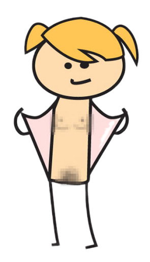

Такой страницы нет!
Зато есть новости, на которые можно подписаться

Да, на этом месте могла быть прекрасная страница, каких больше не делают…
Но ее здесь точно нетПопробуйте начать поиски с Главной